1. 快速开始
打开管理后台首页，输入租户编码、用户名与密码登录。租户编码由承运方提供，决定你进入哪一家物流企业的数据空间。
开发环境演示账号
- 租户编码：
demo - 用户名：
admin，密码：Admin@123 - 预置数据：广州 / 武汉 / 长沙三个网点、演示客户
KH001（月结额度 5 万 / 账期 30 天）、标准价卡std（按重 1.5 元/kg）、演示车辆粤A88888
登录后进入经营看板：运单总量、货量、运费收入、应收与 COD 已收已付等核心指标一目了然。
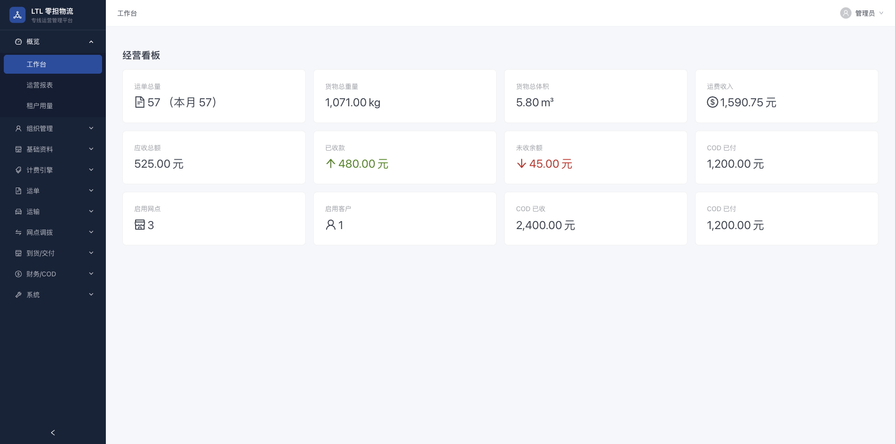
2. 基础资料
开单之前，先在「基础资料 / 组织管理」中准备好以下数据：
- 网点：组织管理 → 网点管理，创建直营网点（编码 + 名称），支持重命名与启停用。
- 客户：基础资料 → 客户管理，维护客户档案、联系人（发货人信息可自动预填）、默认地址与可服务网点授权；月结客户在此设置信用额度与账期。
- 线路：基础资料 → 线路管理，定义线路起点、终点与途经站点顺序。
- 价卡：计费引擎 → 规则集，见下一章。
3. 计费引擎
计费引擎使用声明式规则：只允许白名单字段与操作符组合，不执行任何自定义代码，保证计费安全可审计。
- 计费引擎 → 规则集 → 新建规则集（编码 + 名称）。
- 进入版本页，新建草稿版本。
- 对每条规则配置：优先级（小者先匹配）、名称、计费重量策略、运费类型（固定 / 按重 / 按体积 / 按件数 / 阶梯）、起步价与附加费。
- 添加条件：字段（重量 / 体积 / 件数 / 客户 / 线路 / 始发目的网点）+ 操作符（等于 / 区间 / 大小比较）。设置「客户 = 某客户」即为客户专属价格；不设条件为默认规则。
- 点「校验」→ 零错误后「发布」。已发布版本不可修改，修改请新建版本。
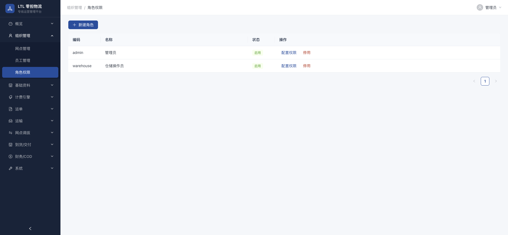
4. 开单
运单 → 开单。按三块填写：
- 业务信息：始发网点、目的网点、客户、价卡、支付方式（现付 / 到付 / 月结），可选填 COD 代收金额。
- 收发货人：选择客户后主联系人自动预填，可修改；收货人信息手工填写。
- 货物件：支持多货物件，逐件填写货名、件数、重量、体积。
点击实时试算查看命中规则与逐项费用明细；确认无误后点「开单并固化费用」。
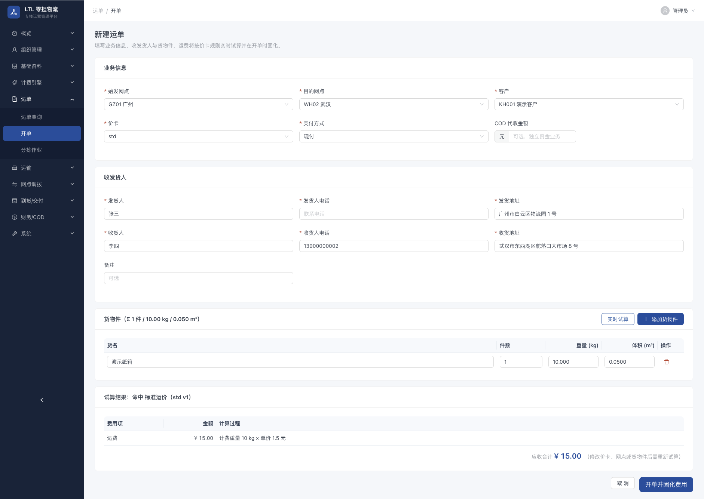
5. 运单全流程
运单创建后为草稿态，在详情页点击「确认运单」后生效，随后按仓库作业推进：
- 确认运单：草稿 → 已确认，费用固化并生成应收。
- 收货登记：录入实收件数、称重与体积复核，系统自动计算与申报差异。
- 创建分拣任务：到分拣作业页完成分拣（货物状态 → 已分拣）。
- 装车运输：进入运输批次（下一章）。
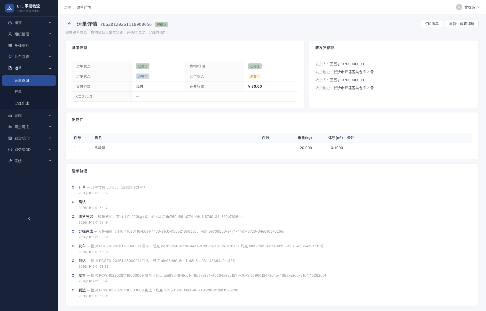
详情页还可执行打印面单（标准 A5 模板 + 运单号二维码）与重新生成查询码（旧码立即失效）。
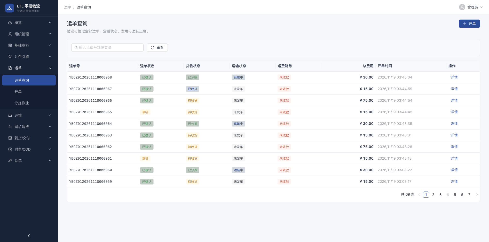
6. 运输批次
运输 → 批次列表 → 新建批次：选择起点网点、目的网点、车辆（司机可选）。
- 装车确认：在工作台输入运单号装车；系统校验货物已收货/已分拣、车辆载重与容积，并防止同一票重复装车。
- 发车：批次 → Departed，在车运单运输状态变为「运输中」，全程留痕。
- 到达：批次 → Arrived，配载行转非活跃，可装入下一段批次。
- 多段运输：例如广州—武汉—长沙，创建第二段批次（武汉→长沙）再次装车发车即可；运单轨迹完整记录每一段。
7. 网点调拨
网点调拨用于同一租户内直营网点之间的货物交接，不产生对外销售收入。
- 网点调拨 → 创建调拨单：调出网点、调入网点、货物与申报数量。
- 提交 → 调出方发出确认。
- 调入方验收入库：逐项录入实收数量与破损数，填写差异说明；验收一次性写入、不可覆盖。
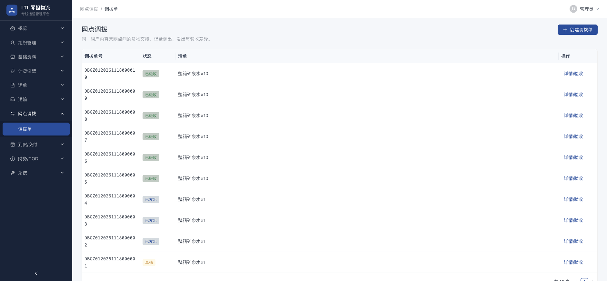
8. 财务与收款
财务 / COD → 财务管理，按运单 ID 查询应收账款：
- 应收在运单确认并固化费用后初始化（金额 = 运单费用总额）。
- 支持部分收款与多次收款：每次收款自动核销到应收，状态从未收 → 部分收款 → 结清。
- 月结客户开单时做信用额度前置校验：未收余额超过额度将拒绝开单；额度与账期在客户档案中设置。
- 退款与冲正采用追加式记录，原始资金流水不可修改删除。
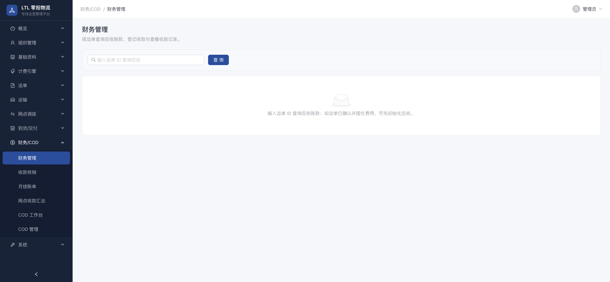
收款核销明细与月结账单分别见「收款核销」「月结账单」页面；网点维度的收款汇总见「网点收款汇总」（支持按月筛选与导出）。
9. COD 代收款
COD（代收货款）是独立资金业务，金额不计入物流运费收入，全链路独立追踪：
- 开单设置代收金额：开单页填写 COD 代收金额后自动生成 COD 订单。
- 登记收款：COD 工作台按运单查询订单，登记收取（支持部分收取）。
- 创建结算单：COD 管理 → 创建结算（可结算上限 = 已收 − 已结算）。
- 审批 → 付款：结算单审批后登记付款给发货人；不允许超额结算。

10. 报表与导出
- 经营看板：首页核心指标（可按月份筛选）。
- 运营报表：网点 / 线路 / 客户三维度运单量与运费收入，按月统计，一键导出 Excel(CSV)。
- 网点收款汇总：按运单始发网点聚合累计与当月收款。
- 租户用量：运单数、用户数、文件数与存储字节。
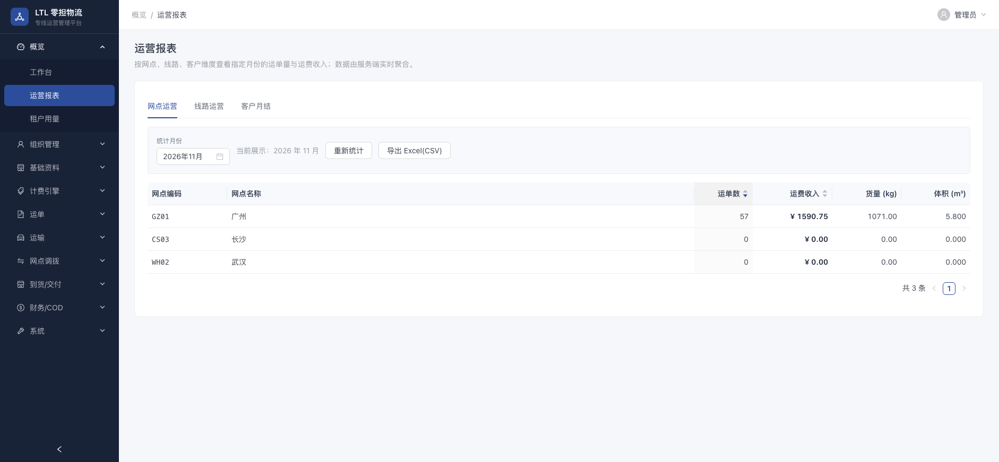
11. 组织与权限
组织管理提供用户、角色与网点的组合授权：
- 角色：角色权限页「配置权限」按模块勾选权限点，保存后对已登录用户实时生效。
- 用户：员工管理页「编辑」可改名、分配角色、设置网点数据范围；勾选租户级范围则可访问全部网点。
- 安全边界：菜单隐藏只是展示控制，所有数据操作都由服务端重新校验租户与网点权限。
12. 移动作业
现场人员使用移动作业端 /m（手机浏览器或企业微信内置浏览器打开）：
- 扫码查询：扫描运单条码快速查询，不便使用摄像头时可手动输入运单号。
- 收货登记：核对实收件数、重量与体积。
- 装车配载：选择批次，扫描运单装车。
- 到货核验：按批次登记实收与破损。
13. 客户查单
发货客户无需账号，访问 /track 即可自助查单：
- 输入承运方编码（开单成功弹窗中提供）+ 运单号 + 查询码。
- 系统展示脱敏后的运单状态与轨迹（手机号掩码，不暴露内部数据）。
- 查询码可在运单详情由操作员重新生成，旧码立即失效。
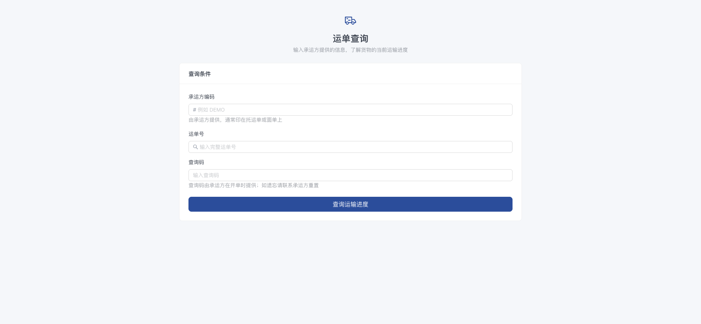
14. 消息通知
运单关键事件（收货登记、发车运输、到达目的网点、签收）会自动生成收货人通知，全部留痕可查（NOTIFY-001）：
- 通知记录：系统 → 通知记录，按事件类型筛选。
- 接收人：运单收货人手机号；内容含运单号与事件说明。
- 通道适配：短信 / 微信真实外发需在服务端配置服务商凭证；未配置时以日志通道落记录（状态已发送），接入服务商后无需改动业务代码。
- 通知为旁路能力：发送失败记录原因，不阻断运单主流程。
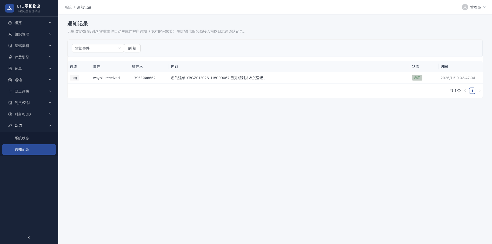
15. 移动派单与 GPS 轨迹
派单（DELIVERY-002）
- 到货/交付页创建配送任务后，将任务派单给员工（记录指派人）。
- 员工在移动端「派单」页查看我的待办配送任务；完成签收后任务自动闭环（沿用既有签收流程）。
GPS 轨迹（GPS-001）
- 批次发车后，配送员在移动端「位置」页选择批次，点击「上报当前位置」（浏览器定位授权）。
- 轨迹点追加式写入批次轨迹（含精度），不可修改删除。
- PC 端批次详情页查看完整轨迹点列表（时间 + 坐标 + 精度）。
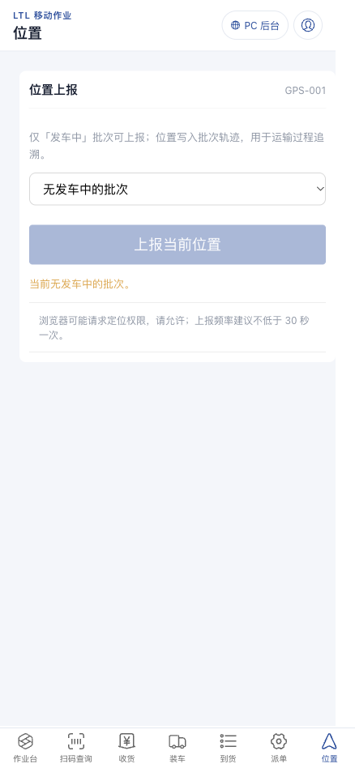
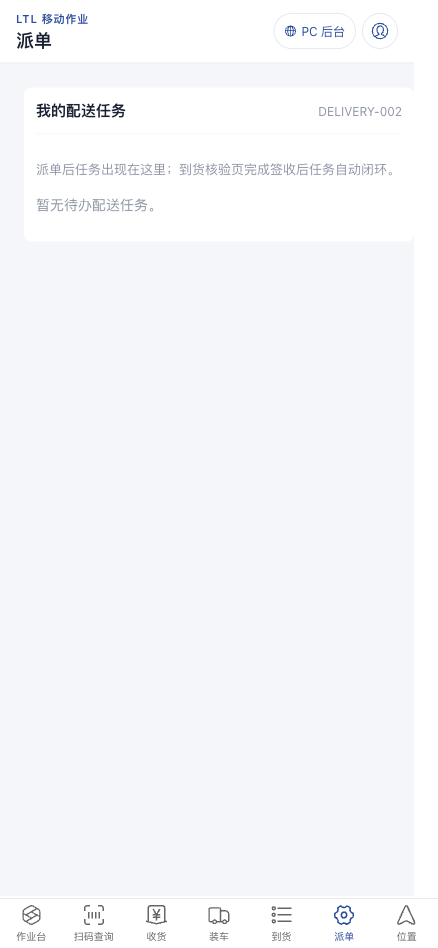
16. 打印设备对接
面单页除浏览器 A5 打印外，支持 ESC/POS 热敏指令导出（PRINT-001）：
- 运单详情 → 打印面单 → 「导出热敏指令 (.prn)」。
- 下载的
.prn文件为 58mm 热敏小票风格指令（含运单号、收发货人、货量、费用、签字栏）。 - 通过本地打印代理 / 热敏打印机投递即可出单；真实设备通信由打印代理完成，本系统只负责协议指令生成。
17. 套餐配额
租户可设置套餐与配额（TEN-002），超限时对应操作将被拒绝：
- 运单配额：开单前校验，超限返回明确提示。
- 用户配额：创建员工前校验。
- 存储配额：上传文件前校验（现有用量 + 新增 > 上限 → 拒绝）。
- 配额项为空 = 不限制（默认）。
租户用量页（报表 → 租户用量）展示当前套餐与各配项进度；配额由服务端设置端点维护（quota.manage 权限）。
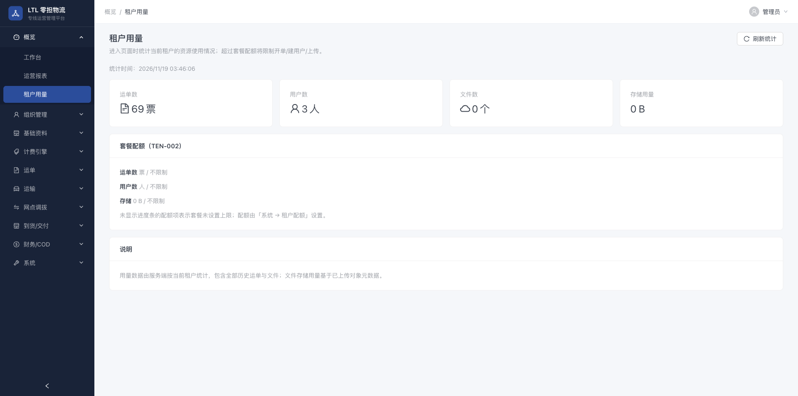